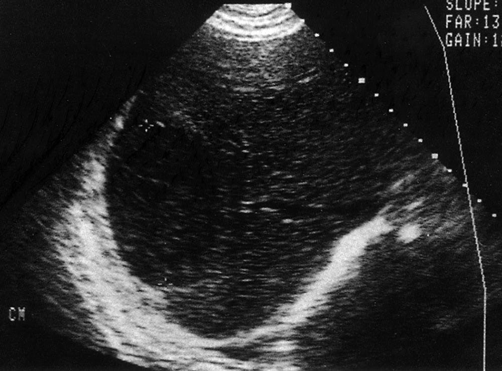
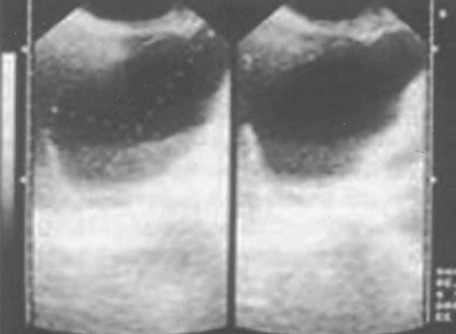
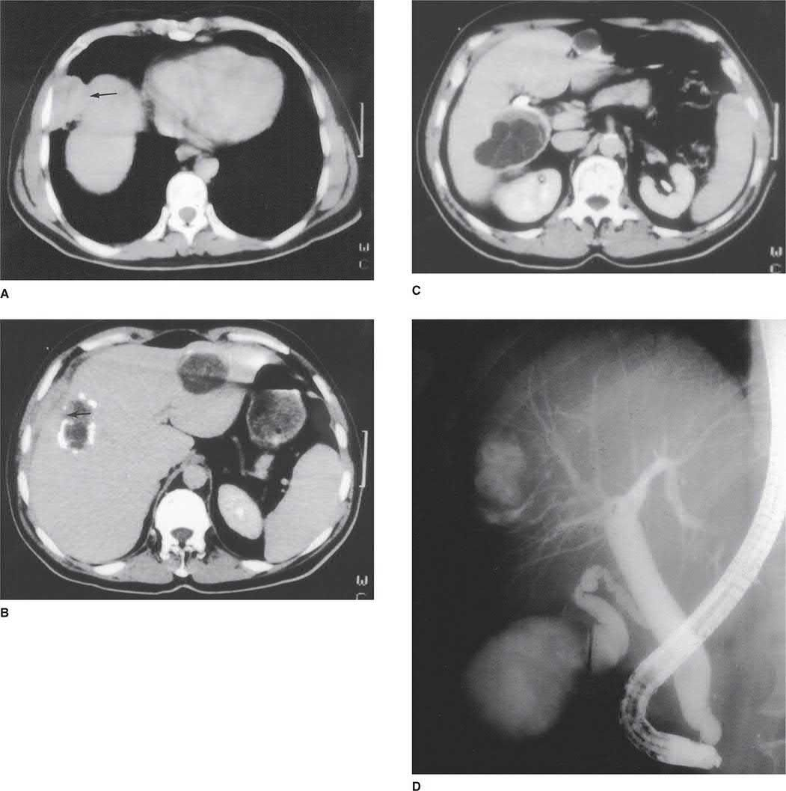

Tropical Infections and Infestations
Summary
- These are parasitic diseases a general surgeon meets either in an endemic setting or in a returning traveller, and the recurring theme is that medical treatment comes first and surgery is reserved for complications
- That is stated most plainly for amoebiasis: medical treatment is very effective and should be the first choice electively, with surgery reserved for rupture into the pleural, peritoneal or pericardial cavities [1].
- This page covers amoebic liver abscess, ascariasis, filariasis and hydatid disease.
- Amoebic and hydatid liver abscesses are also covered from the hepatobiliary side on the Liver Abscess and Cysts page.
Definition
Hydatid disease is caused by Echinococcus granulosus, the dog tapeworm [1].
Filariasis is mainly caused by Wuchereria bancrofti, transmitted by the mosquito, with the variants Brugia malayi and Brugia timori responsible in about 10% of those infected [1].
Ascaris lumbricoides, the roundworm, is the commonest intestinal nematode to infect humans [1].
Pathophysiology
The hydatid cyst has three layers, and knowing them explains the operation: an outer pericyst derived from compressed host tissue; an intermediate hyaline ectocyst, which is non-infective; and an inner endocyst, the germinal membrane, which contains the viable parasites that can separate to form daughter cysts [1].
The dog is the definitive host and the commonest source of infection for the intermediate hosts, humans, sheep and cattle [1]. Eggs passed in dog faeces are highly resistant to extremes of temperature and may survive for long periods, and close contact with an infected dog causes oral contamination [1].
A variant in colder climates, caused by Echinococcus multilocularis, spreads from the outset by actual invasion rather than expansion [1], which is why it behaves more like a malignancy than a cyst.
In filariasis the adult worms colonise the lymphatic system, having taken almost a year to mature after the mosquito bite [1]. Adult worms cause lymphatic obstruction and massive lower limb oedema; obstruction of the cutaneous lymphatics thickens the skin, giving an appearance not unlike the peau d'orange of breast cancer [1]. Recurrent lymphangitis causes fibrosis of the lymph channels, producing elephantiasis [1].
Clinical features
Filariasis mainly affects males, because women generally cover more of their bodies with clothing and are therefore less exposed to mosquito bites [1].
Acute filariasis presents with episodic attacks of fever with lymphadenitis and lymphangitis, and adult worms may occasionally be felt subcutaneously [1]. Chronic manifestations appear after repeated acute attacks over several years [1]. Secondary streptococcal infection is common [1].
Bilateral lower limb filariasis is often associated with scrotal and penile elephantiasis, and early on there may be a hydrocele underlying the scrotal disease [1]. Chyluria and chylous ascites may occur, and a mild respiratory form causes a dry cough, tropical pulmonary eosinophilia [1].
- Hydatid disease is protean, because the parasite can colonise virtually every organ.
- The classical presentation is a sheep farmer, otherwise well, with a gradually enlarging painful right upper quadrant mass and the findings of a liver swelling [1]. The liver is the organ most often affected, the lung next [1].
- It may be entirely asymptomatic and found incidentally on imaging or at postmortem; symptomatic disease presents with pressure effects [1].
Etiology
Filariasis affects more than 120 million people worldwide, two-thirds of them in India, China and Indonesia, and according to the WHO it is the most common cause of long-term disability after leprosy [1].
Hydatid disease is globally distributed and common in the tropics; in the UK the occasional patient comes from a rural sheep-farming community [1].
Diagnosis
In full-blown filariasis, investigation is superfluous, the condition is clinically obvious [1]. Where confirmation is needed, eosinophilia is common and a nocturnal peripheral blood smear may show the immature forms, the microfilariae; the parasite may also be seen in chylous urine, ascites and hydrocele fluid [1].
An amoeboma in a colonic mass must have cancer excluded by appropriate imaging and biopsy [1].

Thresholds and severity
The WHO Informal Working Group on Echinococcosis proposed a standardised ultrasound classification in 2003, based on the activity of the cyst, which is universally accepted because it determines management [1]:
| Group | Description |
|---|---|
| 1, Active | Cysts larger than 2 cm, often fertile |
| 2, Transition | Cysts beginning to degenerate through host resistance or treatment, but may contain viable protoscolices |
| 3, Inactive | Degenerated, partly or totally calcified cysts, unlikely to contain viable protoscolices |
The threshold for draining a left lobe amoebic abscess should be low, given its propensity to rupture into the peritoneal, pleural or pericardial cavity [1].
Aspiration is carried out when rupture is imminent, especially where the left lobe is involved [1]. Pigtail catheter drainage may be considered where a patient has not responded to intravenous metronidazole within the first 48 to 72 hours, to improve antibiotic penetration [1].
Drug treatment runs in two phases, and the second is easily forgotten. Metronidazole and tinidazole are the effective drugs; after them, diloxanide furoate (a luminal amoebicide with no activity against hepatic infestation) is given for 10 days to destroy any remaining intestinal amoebae [1].
Filariasis responds to diethylcarbamazine in the early stages, before the gross deformities of elephantiasis have developed [1]. In early limb swelling, intermittent pneumatic compression helps, but must be repeated over a prolonged period [1].

Treatment and Management
Amoebiasis is treated medically first. Surgery is reserved for the complications of rupture into the pleural cavity (usually the right side) or the peritoneal or pericardial cavities, where the principles are resuscitation, drainage and appropriate lavage alongside vigorous medical treatment [1].
Severe haemorrhage and toxic megacolon are rare intestinal complications of amoebiasis. They are managed as any surgical emergency: resuscitation, then resection of bowel with exteriorisation (subtotal colectomy with terminal ileostomy and closure of the rectal stump) followed by vigorous supportive therapy in intensive care, exactly as for toxic megacolon of any cause [1].
An amoeboma that has not regressed after full medical treatment is managed by colonic resection, particularly where cancer cannot be excluded [1].
Procedural interventions
For amoebic abscess the graded interventions are repeated aspiration or pigtail catheter drainage combined with drug treatment for large abscesses, with open surgery reserved for rupture [1].
For hydatid disease the operative principle follows from the cyst's three layers: the germinal endocyst is the infective part, and spillage disseminates the disease, the technique and the risk of anaphylaxis are set out on the Liver Abscess and Cysts page.
Complications
The complications that convert amoebiasis from a medical to a surgical disease are rupture (into pleura, peritoneum or pericardium) and, in the large bowel, severe haemorrhage and toxic megacolon [1].
In filariasis the end-stage complication is elephantiasis, produced by fibrosis of the lymph channels after repeated lymphangitis, and it is irreversible by the time it is established, which is why treatment is directed at the early stages [1].

Outcomes
Diethylcarbamazine is very effective early in filariasis and of little use once elephantiasis has developed [1], making this a disease where the outcome is decided by how early the patient presents.
Medical treatment of amoebiasis is very effective [1], and the surgical caseload consists almost entirely of those who present with a complication rather than with the disease.
References
- Bailey & Love's Short Practice of Surgery, 28th ed., Ch. 6 Tropical infections and infestations
- Sabiston Textbook of Surgery, 22nd ed., Ch. 89 The Liver
- Maingot's Abdominal Operations, 13th ed., Ch. 56